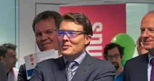
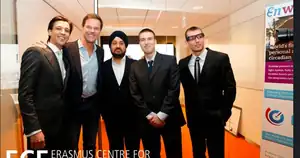

Engineering & SimulationIIT Madras · NUS CFD · Philips Singapore · FEA / CFD
Ajit Pal Singh — from engineering to AI-enabled decision intelligence

Career in one view
Engineering → Innovation → Pricing → Finance → AI
20+ years turning technical, commercial and financial evidence into decisions people can act on.
Product Innovation6 Philips patent families · product development · industrialisation
Technology ConsultingCross-category R&D · testing · front-end innovation
Pricing & PortfolioSegmentation · conjoint · value pricing · commercial economics
Finance & Data Science17 markets · pricing / FP&A · governed decision analytics
AI Decision IntelligencePricing · banking · governed AI · agentic analytical workflows
6patent families
10CAE examples
17markets
>€450Mannual trade-investment scope
Selected work & professional evidence
One career. Four strong evidence pillars.
The portfolio combines independent case studies with selected professional experience. The common thread is turning complex technical, commercial and financial evidence into decisions people can act on.
Published / live
Professional case study
In development
Business Problem→
Evidence→
Analytics / Models→
Decision System→
Human Action→
Business Value
Independent POC
Banking Transaction Intelligence
Transaction streams → cash outlook → behavioural context → explainable change signals → relationship-manager review.
3 / 424developer-sandbox accounts / activities~564ksynthetic longitudinal activities
Explore Banking →
Live workbench
Pricing & RGM
Experimentation, commercial economics and targeting — demonstrating why conversion uplift is not automatically profitable growth.
+5.4%booking uplift−11.0%margin uplift
Explore Pricing →
Professional case study
Global Price Harmonisation & Finance Analytics
17-market pricing transparency, KPI governance, discrepancy / arbitrage / value-leakage analysis and executive-to-root-cause decision support.
17markets€20M+estimated annual leakage exposure analysed
Explore Finance →
Professional case study
Engineering, Innovation & Product Development
ANSYS CAE, transient thermal and structural/contact simulation, invention evidence, product development and cross-site technical leadership.
6patent families10CAE examples in verified showcase
Explore Engineering →
Additional evidence areas
Customer & Portfolio · Manufacturing · Supply Chain · AI Transformation
Career journey
From physics and product creation to pricing, finance and AI-enabled decisions.
My career is not a sequence of disconnected roles. It is a progression: understand how things work, turn technology into products, connect products to markets and economics, then use data and AI to improve management decisions.
6Philips patent families
10consumer-product CAE examples
~2Mrecords in price-analytics Stage 1
17markets in global analytics scope
>€450Mannual STTI analytics scope
20+ yrsengineering → business → AI
01EngineeringFEA · CFD · thermal
→
02Product Innovationpatents · NPI · industrialisation
→
03Technology Consultingcross-category R&D
→
04Commercial & Pricingportfolio · conjoint · value
→
05Finance & Data Scienceglobal pricing · KPIs
→
06AI Decision Intelligenceanalytics · agents · human action
Signature innovation
Steam-generation innovation & patent evidence
Named inventor/co-inventor across six Philips patent families/publications in steam-generation and garment-care technology. Public patent evidence includes steam-discharge, soleplate and system-level architecture.
Technology consulting
Advanced Technology Centre — solving difficult product problems
Joined ATC Drachten as Senior Engineer, Metalforming & CAE after a structured Singapore-to-Drachten transfer of simulation knowledge. Later evidence shows cross-category ANSYS-based thermal and structural problem solving, testing and engineering interpretation.
Business decision systems
Global pricing and finance analytics
Moved from product and portfolio decisions into FP&A / analytics, with formal Analytics Project Lead evidence across pricing initiatives. Work included 17-market Price Harmonisation and a Python / Power BI Stage-1 price-erosion and elasticity solution over approximately two million records.



On Ocassion of winning Erasmus Centre for Entrepreneurship (statup) competition
On March 1, 2014, The ECE Startup Campus, an initiative of the Erasmus Centre for Entrepreneurship, was officially opened by the Dutch Prime Minister Mark Rutte.
Entrepreneurship & venture building · 2012–2015
ENWAKE — from MBA idea to wearable-technology venture
Co-Founder & CTO, part-time alongside Philips. Helped turn an MBA entrepreneurship concept focused on jet lag and fatigue into a wearable light-therapy venture, leading product architecture, prototyping, supplier coordination and IP strategy.
WinnerECE Get Started Programme 2013 · €5,000 award
PatentWO2014162271 wearable light-therapy concept
PrototypePublic demonstrations in the Dutch startup ecosystem
CTOProduct architecture · suppliers · prototype · IP
Career chapters
Scan the journey. Open any chapter for role scope, methods and outcomes.
2002–2008 Philips Singapore — Engineering, Simulation & Product DevelopmentCAE depth · product lifecycle · invention · manufacturing Open chapterClose chapter+
Engineering & simulation
Verified and strongly corroborated evidence includes ANSYS thermal / transient-thermal and structural work, experimental correlation, optimisation studies and transfer of thermal/flow simulation knowledge.
Product lifecycle
Product design from requirements and concept selection through specification, detailed design, prototyping, testing, pilot run and production ramp-up.
Innovation & patents
Named inventor/co-inventor across six Philips patent families/publications in steam-generation and garment-care technology.
Industrialisation
Production trials and ramp-up exposure across Batam (Indonesia), China and India, with post-NPI quality problem solving before lifecycle handover.
Cost & scale
Historical cost and volume claims are retained only in the private evidence ledger unless primary corroboration is available for a specific application.
Offshore R&D
Represented Philips Singapore in a multi-site Simulation Cluster and owned structured transfer of simulation requirements, boundary conditions, optimisation logic and interpretation before moving to Drachten.
2008–2015 Philips ATC Drachten — Senior Engineer, Metalforming & CAECross-category CAE · simulation interpretation · product problem solving Open chapterClose chapter+
Consumer-product breadth
Worked across coffee makers, shavers / trimmers, oral healthcare including AirFloss, garment care, floor care / vacuum cleaners and kitchen appliances including Airfryer.
Consulting model
Translated ambiguous R&D and manufacturing problems into structured evidence and recommendations using simulation, experiments, root-cause analysis and design optimisation.
Front-end innovation
Technology scouting, feasibility assessment, objective and consumer testing, patent landscaping, open innovation and external-expert networking.
Technical project management
Coordinated R&D, Consumer Marketing and programme stakeholders and led front-end innovation work such as the Garment Care Refresh Hanger programme.
2012–2015 ENWAKE Holding BV — Co-Founder & CTO (part-time alongside Philips)Wearable technology · entrepreneurship · prototype · IP Open chapterClose chapter+
Entrepreneurship
Co-founded a Dutch wearable-technology startup originating from an MBA entrepreneurship project focused on jet lag and fatigue.
Product & IP
Led product architecture, prototyping, supplier coordination and IP strategy; the venture produced patent publication WO2014162271.
Recognition
Philips Innovation Awards semifinalist and winner of the ECE Get Started Programme 2013 (€5,000 award); the first prototype was presented at the ECE Startup Campus opening attended by then Prime Minister Mark Rutte.
2015–2017/18 Philips Consumer Marketing / Portfolio AnalyticsChina portfolio · root-cause analysis · scenarios · range decisions Open chapterClose chapter+
Customer & market perspective
Personally authored China shaver value-decline analysis linking market, price-band, competitor, volume, value and SKU movements.
Decision methods
The analysis found 7.7% value decline despite 4% volume growth; 12 SKUs represented RMB295M, or 67%, of the analysed value decline.
Market execution
Range analysis showed 53 of 330 SKUs generated 80% of market value; contribution to forward range scenarios is strongly corroborated, without claiming realised outcomes.
2015–2016 Philips Global Change & Configuration Management RolloutProcess deployment · organisational adoption · sign-off Open chapterClose chapter+
Global deployment
Member of the global deployment team implementing the PTC Windchill Change & Configuration Management process across Philips sites worldwide.
Change leadership
Acted as the link between the central programme and sites, supporting readiness, organisational adoption, alignment to a common way of working and rollout sign-off.
2017–2024 Philips FP&A / Group Finance — Financial Data Scientist → Senior Financial Data Scientistpricing analytics · decision support · analytics project leadership Open chapterClose chapter+
Global scope
Built and rolled out Price Harmonisation decision support across 17 international markets, with transaction-level drill-down and commercial-policy use.
Management products
Served as Analytics Project Lead for first-stage PH Price Optimization; Python and Power BI processed approximately two million records for price-erosion and elasticity decision support.
Value & governance
Co-developed recurring analytics covering >€450M annual STTI spend; Group Tax dashboard was delivered in two months with an internal >€10M annualised risk-mitigation estimate.
Technology & ownership
Financial Data Scientist evidence exists in 2017; the formal Senior Financial Data Scientist chapter is dated from 2018. Estimates and programme-level values are not presented as personal realised savings.
2025–Present Independent Consultant — Data Science, Pricing & AI-Enabled AnalyticsSME analytics · pricing · financial insight · AI-enabled workflows Open chapterClose chapter+
Commercial analytics
Works with ERP, invoice, sales and cost data to identify margin leakage, price-volume-mix effects, customer / product profitability and pricing opportunities.
Decision support
Builds Python-based analytical models, Power BI-ready management outputs and practical recommendations for SME leaders.
AI implementation
Developing AI-enabled and agentic analytical workflows with a human-in-the-loop model: structured data and deterministic checks remain the factual backbone while AI supports reasoning and repetitive work.
International footprint
Technology, products and decisions across regions.
Singapore→Batam→China→India→Drachten→Amsterdam→Maastricht
Additional international technical-consulting work included the USA and Austria.
Executive MBAStrategy & InnovationRotterdam School of Management, Erasmus University · 2012

MScComputational Fluid Dynamics (Aerospace)National University of Singapore · 2002 · full scholarship

BTechMechanical EngineeringIIT Madras · 1998
Six SigmaStructured problem solvingProcess, quality and analytical discipline
![Ajit Pal Singh standing by the river in Maastricht]()
About me
Hi, I’m Ajit Pal Singh
Engineer, innovator, analytics professional — and always curious about what comes next.
I was born in India, studied Mechanical Engineering at IIT Madras, moved to Singapore for my master’s at NUS, and eventually built the second half of my career in the Netherlands. Over the years, my work has moved from engineering and product innovation into pricing, finance, analytics and AI-enabled decision making.
Beyond work, I am married and a father of two. I value family, continuous learning and meaningful experiences. I am based in Maastricht, became a Dutch citizen in 2025, and remain open to relocating internationally for the right opportunity.
Family
Married and father of two. Family keeps me grounded, balanced and ambitious about building a meaningful life.
Maastricht
Home today — a beautiful, international city in the south of the Netherlands.
Dutch Citizen
Dutch citizen since 2025, with an international outlook shaped by India, Singapore, Asia and Europe.
Open to Relocation
Maastricht is home, but I am open to moving within Europe or globally for a compelling role and challenge.
Technology Curious
I actively explore new technologies and how they may reshape work, organisations, markets and everyday life.
Yoga & Meditation
Yoga and meditation help me stay focused, balanced and able to look at difficult problems with perspective.
Nature
I love nature and am fascinated by how robust processes and systems have evolved over millions of years.
Automated Trading & Innovation
I am passionate about developing fully automated trading systems and using them as a laboratory for quantitative thinking, software, AI and disciplined decision making.
“Technology is most powerful when it helps people make better decisions and live better lives.
— Ajit Pal Singh
Contact
Explore the evidence or start a conversation.
Available for senior data science, pricing, analytics, decision-intelligence and AI-product opportunities.